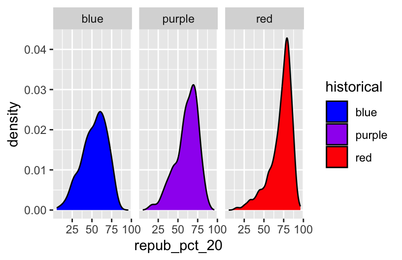
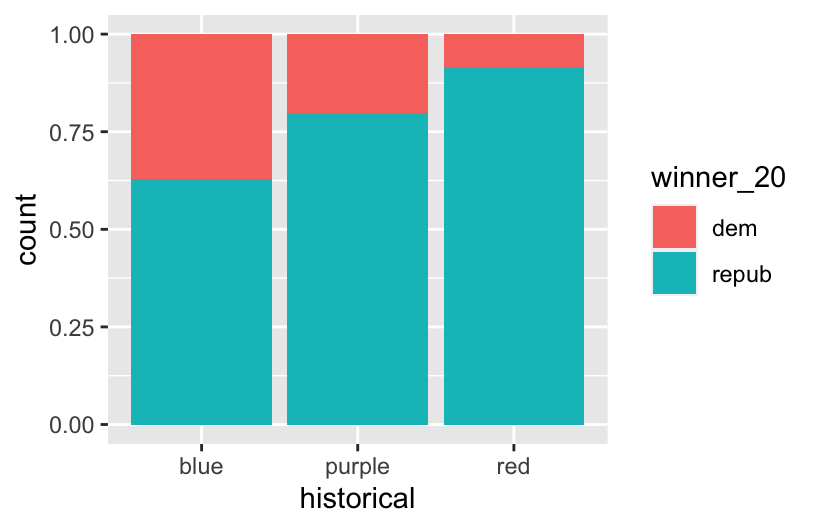
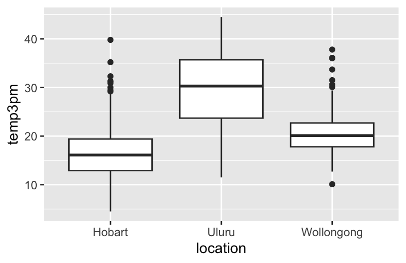
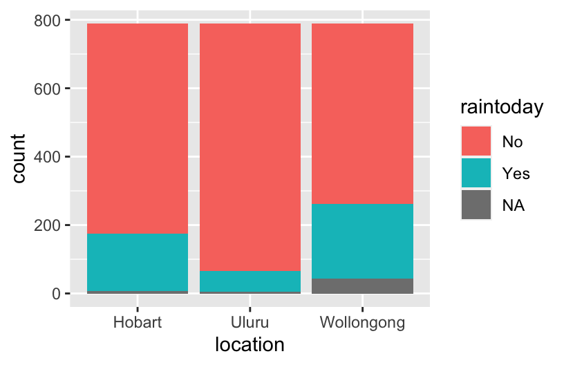

── Attaching core tidyverse packages ──────────────────────── tidyverse 2.0.0 ──
✔ dplyr 1.1.4 ✔ readr 2.1.5
✔ forcats 1.0.0 ✔ stringr 1.5.1
✔ ggplot2 3.4.4 ✔ tibble 3.2.1
✔ lubridate 1.9.3 ✔ tidyr 1.3.1
✔ purrr 1.0.2
── Conflicts ────────────────────────────────────────── tidyverse_conflicts() ──
✖ dplyr::filter() masks stats::filter()
✖ dplyr::lag() masks stats::lag()
ℹ Use the conflicted package (<http://conflicted.r-lib.org/>) to force all conflicts to become errors2 Bivariate Visualization
Exercise 0:
# Load data
elections <- read.csv("https://mac-stat.github.io/data/election_2020_county.csv")
# Check it out
head(elections) state_name state_abbr historical county_name county_fips total_votes_20
1 Alabama AL red Autauga County 1001 27770
2 Alabama AL red Baldwin County 1003 109679
3 Alabama AL red Barbour County 1005 10518
4 Alabama AL red Bibb County 1007 9595
5 Alabama AL red Blount County 1009 27588
6 Alabama AL red Bullock County 1011 4613
repub_pct_20 dem_pct_20 winner_20 total_votes_16 repub_pct_16 dem_pct_16
1 71.44 27.02 repub 24661 73.44 23.96
2 76.17 22.41 repub 94090 77.35 19.57
3 53.45 45.79 repub 10390 52.27 46.66
4 78.43 20.70 repub 8748 76.97 21.42
5 89.57 9.57 repub 25384 89.85 8.47
6 24.84 74.70 dem 4701 24.23 75.09
winner_16 total_votes_12 repub_pct_12 dem_pct_12 winner_12 total_population
1 repub 23909 72.63 26.58 repub 54907
2 repub 84988 77.39 21.57 repub 187114
3 repub 11459 48.34 51.25 dem 27321
4 repub 8391 73.07 26.22 repub 22754
5 repub 23980 86.49 12.35 repub 57623
6 dem 5318 23.51 76.31 dem 10746
percent_white percent_black percent_asian percent_hispanic per_capita_income
1 76 18 1 2 24571
2 83 9 1 4 26766
3 46 46 0 5 16829
4 75 22 0 2 17427
5 88 1 0 8 20730
6 22 71 0 6 18628
median_rent median_age
1 668 37.5
2 693 41.5
3 382 38.3
4 351 39.4
5 403 39.6
6 276 39.6
winner_20 n
1 dem 536
2 repub 2573The republicans won about 82.8% of the counties.
`stat_bin()` using `bins = 30`. Pick better value with `binwidth`.
I don’t understand the significance of this being negatively skewed.
Exercise 1:
Exercise 2:
Exercise 3:
With an increase in republican percentage in 2016, there is an increase in republican percentage in 2020. This relationship is very strong, and it is a positive relationship. A lot of counties in Texas seem to lie above the trend (positive residuals), which could be because they are more republican than the average state.
2.1 Exercise 4: {.unnumbered} :
`geom_smooth()` using method = 'gam' and formula = 'y ~ s(x, bs = "cs")'
ggplot(elections, aes(y = repub_pct_20, x = repub_pct_16)) +
geom_point() +
geom_smooth(method = "lm")`geom_smooth()` using formula = 'y ~ x'
# Scatterplot of repub_pct_20 vs median_rent
ggplot(elections, aes(x = median_rent, y = repub_pct_20)) +
geom_point() 
# Scatterplot of repub_pct_20 vs median_age
ggplot(elections, aes(x = median_age, y = repub_pct_20)) +
geom_point() 
Median rent seems to explain repub_pct_20 better: as median rent rises, repub_pct_20 seems to fall, suggesting a moderate negative relationship. Median age does not seem to explain repub_pct_20 very well.
Exercise 6:

A scatterplot is very useful for 2 quantitative variables. Historical seems to be a categorical variable with 3 categories, so a boxplot would be a better idea.
Exercise 7:


This tells us that if a county was historically democrat, people voted less republican in 2020 than if the country was historically purple, which is less than if the county was historically red.
Exercise 8:

2.2 Exercise 9: {.unnumbered} :
# Name two "bad" things about this plot
ggplot(elections, aes(x = repub_pct_20, fill = historical)) +
geom_density()- It is opaque, so I can’t see part of the data (for the green and red plots).
- The colors do not correspond to the colors they are representing (red is blue, blue is red)
# What does scale_fill_manual do?
ggplot(elections, aes(x = repub_pct_20, fill = historical)) +
geom_density() +
scale_fill_manual(values = c("blue", "purple", "red"))This fixes the second issue with this! The colors correspond to the category they are representing.
# What does alpha = 0.5 do?
# Play around with different values of alpha, between 0 and 1
ggplot(elections, aes(x = repub_pct_20, fill = historical)) +
geom_density(alpha = 0.5) +
scale_fill_manual(values = c("blue", "purple", "red"))
This fixes the first issue I had with the plot! It increases its transparency.
# What does facet_wrap do?!
ggplot(elections, aes(x = repub_pct_20, fill = historical)) +
geom_density() +
scale_fill_manual(values = c("blue", "purple", "red")) +
facet_wrap(~ historical)
It makes each of the categories into separate small graphs, while using the same axes.
# Let's try a similar grouping strategy with a histogram instead of density plot.
# Why is this terrible?
ggplot(elections, aes(x = repub_pct_20, fill = historical)) +
geom_histogram(color = "white") +
scale_fill_manual(values = c("blue", "purple", "red"))`stat_bin()` using `bins = 30`. Pick better value with `binwidth`.
This uses a histogram, which is difficult to understand because there is so much information.
Exercise 10:
- Which do you like best? Side-by-side boxplots
- What is one pro of density plots relative to boxplots? It gives you a visual representation of how skewed the data is
- What is one con of density plots relative to boxplots? It does not give you any numerical summaries (IQR, median)
Exercise 11:


Exercise 12:
# A stacked bar plot
# How are the "historical" and "winner_20" variables mapped to the plot, i.e. what roles do they play?
ggplot(elections, aes(x = historical, fill = winner_20)) +
geom_bar()

# A side-by-side bar plot
# Note the new argument to geom_bar
ggplot(elections, aes(x = historical, fill = winner_20)) +
geom_bar(position = "dodge")# A proportional bar plot
# Note the new argument to geom_bar
ggplot(elections, aes(x = historical, fill = winner_20)) +
geom_bar(position = "fill")
Part a: An advantage to using a proportional bar chart is that it gives us a proportion of the numbers who voted democrat or republican within each historical category, instead of the raw number. A disadvantage to using a proportional bar chart is that you don’t know the raw count of the people who voted democrat or republican within each category- we loose data, because we don’t know which category voted most frequently, just the proportion with which they voted.
Part b: I like side-by-side bar charts (the third graph) because it is easy to follow and understand, the categories are grouped together, and I can see the raw count of votes for each party.
Exercise 13:
# How do 3pm temperatures (temp3pm) differ by location?
ggplot(weather, aes(x=location, y=temp3pm))+
geom_boxplot()Warning: Removed 19 rows containing non-finite values (`stat_boxplot()`).
The location variable is categorical: there are 3 categories. The temp3pm variable is quantitative. Hence, a boxplot or violin plot would be best at representing this data.
# How might we predict the 3pm temperature (temp3pm) by the 9am temperature (temp9am)?
ggplot(weather, aes(x=temp9am, y=temp3pm))+
geom_point()+
geom_smooth()`geom_smooth()` using method = 'gam' and formula = 'y ~ s(x, bs = "cs")'Warning: Removed 27 rows containing non-finite values (`stat_smooth()`).Warning: Removed 27 rows containing missing values (`geom_point()`).
Both of these variables are quantitative, so a scatterplot would be best
# How do the number of rainy days (raintoday) differ by location?
ggplot(weather, aes(x=location, fill=raintoday))+
geom_bar()
Both are categorical variables.